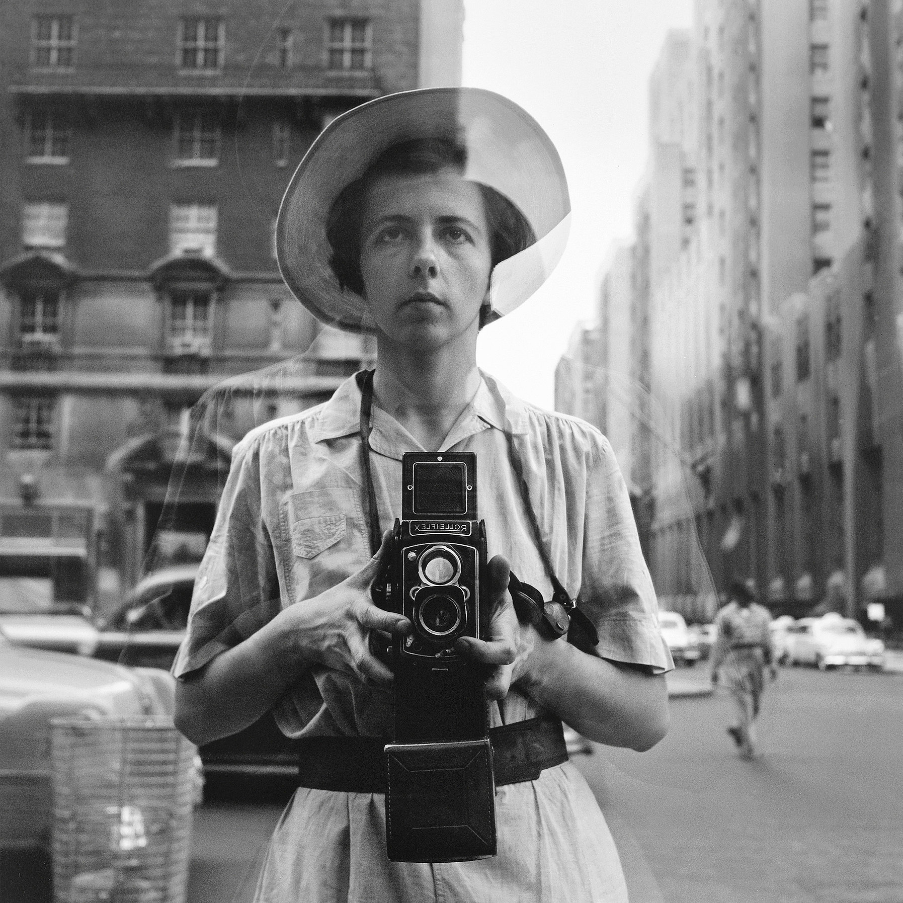

Stuart Franklin (born 1956) is a British photographer and a former president of the Magnum photo agency. He is best known for taking one of the most iconic images of the twentieth century. the ‘tank man’ in Tiananmen Square, Beijing, 1989 is one of the most powerful photographs has come to stand as the defining image of the movement. His documentary photography has taken him to Central and South America, China, South-east Asia and Europe. His photography is concerned with landscape and ecology, he traces how time and landscape interact, how the human influence shapes it, and where landscape and art meet.
“Follow your heart and never give up.”
Vivian Dorothy Maier (born 1926) was an American street photographer whose work was not discovered and recognized until her death. She worked for about forty years as a nanny. A person who fit the stereotypical European sensibilities of an independent liberated woman, accent and all, yet born in New York City. She was obsessed with the practice of taking photographs — which she did for most of her life, and she was obsessed with details of daily life on the streets, from newspapers to men wearing hats. She created incredible black and white and color work through the 1950’s all the way through the late 1990′s. She was quite conservative. Most of the photos she took were just one shot of a scene. Sometimes when she thought the scene was really interesting, she would work the scenes and shoot up to 8 shots. She photographed people who were stationary—and also people who she found interesting as they walked by her.
“We have to make room for other people. It’s a wheel. You get on. You go to the end. And someone else has the same opportunity to go to the end. And so on. And somebody else takes their place.”
Elliott Erwitt (born 1928) is an American advertising and documentary photographer Known for his candid and often humorous black-and-white images.He has been a Member of Magnum Photos since 1954. Erwitt is responsible for some of the most iconic photographs of the 20th century. He renowned for his humanistic photographs. “You just have to care about what’s around you and have a concern with humanity and the human comedy,” he says. With his career spanning over several decades has certainly used this framing to his advantage. Because he finds the most interesting photo the next photo he is going to take. So he continues to strive to go out and hunt for that next photo. Erwitt didn’t make out to become a great or famous photographer. Rather, he saw it as an enjoyable activity and let his photography be an extension of himself. “I’m an amateur photographer, apart from being a professional one, and I think maybe my amateur pictures are the better ones.” He is naturally curious, quirky, and humorous and used his camera to capture that in the world around him.
“The whole point of taking pictures is so that you don't have to explain things with words.”
René Burri (born 1933) was a Swiss Magnum photographer. He was master of documentary and street photography and he helped change photojournalism. René Burri was where history was in the making. His photographs have had a huge influence on our visual understanding of the major political and cultural events of the second half of the twentieth century. He never waits for the perfect moment to take a photograph; instead he quickly captures what is happening in front of the camera, which comes to include a distinctive picture. A little luck and an extensive knowledge of art allowed Burri access to some of the most prestigious and important artists of his time, a rarefied list that includes Le Corbusier, Niemeyer, Giacometti, and Picasso, all of whose portraits he took repeatedly over the years.
“Everyone takes pictures, so you need to have your own opinion.”
Alfred Eisenstaedt (born 1898) was one of the luminaries of German-born American photographer. He is best known for his candid black-and-white shots of celebrities, politicians, and captivating street shots. He was among those Europeans who pioneered the use of the 35-millimeter camera in photojournalism to get closer to his subjects and create more candid pictures. Eisenstaedt was a master at finding the details that tell the big story. His style was unaffected and naturalistic; he let his subjects speak for themselves. Eisenstaedt perfected certain techniques for capturing the spontaneous moment that has given us some of our most enduring photographic images. Also, he was a favorite among editors, not only for his quick eye but also for his ability in making good photographs of any situation or event. He became one of only four original staffers on Life magazine, winning numerous awards for his memorable images. Referred to as one of the founding fathers of photojournalism, he completed around 2500 photo-essays and ninety cover photographs for the magazine.

“It is more important to click with people than to click the shutter.”
Nikos Economopoulos (born 1953) is a Greek photographer known for his photography of the Balkans and of Greece in particular. He works as a member of Magnum since 1990. Thanks to his sense of composition and space, his subjects do not seem out of place, even in a barren and seemingly endless landscapes. His pictures are powerful and full of warmth, but never cute. The poverty of the people in these rural areas, in which he predominantly takes his photographs, remains visible. “Photography for me is not premeditated. It’s pure instinct. I don’t like preparing for it but rather react to whatever I see and experience. I don’t like going somewhere with a pre-constructed assumption but rather going with just a few basic tools and bare pieces of information that I patch together in order to be able to experience things as freely and openly as I can. In this way, every new place is a wonderland. I do not even feel I am telling a story. As a photographer, you don’t answer the question that the frame poses. You create another question. The viewer has to wonder. And you are there, partaking in or even creating that wonder,” He got extremely close to a subject in the foreground, and focused on subjects in the background without infringing on their privacy.
“For me, it is easier to find a better background than to open up the aperture. What is most interesting in modern photography is how you put objects in space. That is very important. To start to break the rules in your own style. This is the target.”
Josef Koudelka (born 1938) is a Czech-born French Magnum photographer. He is among the most important humanist photographers in the world. He is known for his dramatic black-and-white images which address a variety of social and political issues. He is also commonly associated with his depictions of Gypsy culture, which emphasized the mixture of joy and persecution experienced by their community. During his years of travel, he has described the human condition in many countries in his images, “Photography is always different, every time you move to another country you are reborn. You are seeing something else,” he says. His works carry a strong sense of composition, form, and geometry but they also carry an emotional impact. His photos are raw, gritty, and show both the hope and melancholy of life.

“Sometimes I photograph without looking through the viewfinder. I have mastered that well enough, it is almost as if I were looking through it, I photograph only something that has to do with me, and I never did anything that I did not want to do. I do not do editorial and I never do advertising. No, my freedom is something I do not give away easily.”
Richard Sandler (born 1946) is a New York based documentary filmmaker, street photographer, photojournalist, photography curator, and saxophonist. He is thoughtful, erudite, and harbors a great passion for street photography. Capturing some of the most iconic street photography of this bustling city in flux with his Leica, he documented generations of New Yorkers caught in the whirlwind of change that almost 25 years brought upon the city. His work is collected by museums and individuals. Sandler’s New York of the late 70s and 80s is a cyclone of faces, furs, and filth. It’s a visceral cross-section of fabulous wealth and terrible misfortune, often found in the same frame.
“I guess I believe in the remedial power of art, Because with street photography, with this body of work, I’m definitely implying a lot of things and hopefully making people aware of some of the political realities on the street.” “The beauty of shooting street photography, is that you respond before you have time to think.”